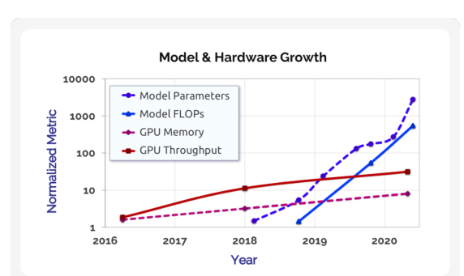

The report that coined ‘foundation models’ ran no experiment
A 114-author, 214-page report chose the name to signal architectural stability and safety, then admitted, in the same section, that it could not say whether the foundation was trustworthy.
Why this matters
You have met the phrase “foundation model” in a research paper, a regulator’s definition, or a vendor’s pitch deck. It read like settled vocabulary, the neutral name for a category that has always existed. It has not. One 2021 Stanford report put that name into circulation, for models already in use under other names, and argued that the shift deserved a new word. The report is cited constantly for the term it introduced, and rarely read for what it actually contains. It is a sweeping taxonomy with no experiment behind it. Its own hedge about the models it named is more cautious than the name it chose. This lesson reads the report the way it was written, and the way its sharpest readers answered it. By the end, you can look at a claim like this one and tell what the document actually found from what it merely announced.
- 01
- Few-shot GPT-3 beat fine-tuning on a handful of tasks and trailed it on most: GPT-3 is one of the three models this report points to as already a foundation model.
- 02
- The slogan ‘stochastic parrots’ outgrew the argument that coined it: the paper this report’s own introduction cites as the scrutiny foundation models were already drawing while it was being written.
114 authors, 214 pages, no experiment
“On the Opportunities and Risks of Foundation Models” went up on arXiv on August 16, 2021, credited to the Center for Research on Foundation Models (CRFM) at Stanford’s Institute for Human-Centered AI. Its structured author list runs to 114 names, ending with Percy Liang as corresponding author.1 The document has gone through three arXiv revisions since. Its current version runs 214 pages. The version circulating when the first critiques appeared ran 212.2
The report’s own table of contents lists six top-level parts: Introduction, Capabilities, Applications, Technology, Society, Conclusion, split into 26 numbered sections, each written by a different subset of the 114 authors. Its “Author Contributions” note says plainly that “not all the views expressed in this report are held by all the authors.”2 None of the 26 sections is a Methods or Results section. A search of the full text for the ordinary language of a new finding turns up nothing: no “we conduct,” no “we trained,” no “our experiment,” no “we ran.”2 The one number the report turns into a chart is not one it measured itself.

The report does call one part of itself an experiment, and it is not the models. “The writing of this report was an experiment,” it says: “we had over 100 people from different backgrounds come together to write a single report covering a wide range of aspects of foundation models.”2 The abstract is careful about what it claims for the models themselves: “We call these models foundation models to underscore their critically central yet incomplete character.”2 Incomplete is the operative word. The report is a survey and a research agenda organized under a new name. It does not report what that name’s subjects can do.
What the word ‘foundation’ was built to do
Section 1.1.1 of the report, titled “Naming,” is where the authors explain the word choice at length. Before this report, the models it discusses went by “large language models,” when they were models of language at all. GPT-3 and BERT fit that label. DALL-E, a model the report names as a third example in its own abstract, does not: it generates images from text, not text from text.2 “Foundation model” is the report’s device for putting a language model and an image model under one name. It turns three separate models, across two fields, into a single paradigm shift. That is naming doing real work: it is the difference between a report about language models and a report about a change sweeping all of AI.
We also chose the term ‘foundation’ to connote the significance of architectural stability, safety, and security: poorly-constructed foundations are a recipe for disaster and well-executed foundations are a reliable bedrock for future applications.2 Bommasani, Liang, et al., §1.1.1
The same section, a few sentences later, states the limit on that claim: “At present, we emphasize that we do not fully understand the nature or quality of the foundation that foundation models provide; we cannot characterize whether the foundation is trustworthy or not.”2 Both sentences are the report’s own, in the same section, a few lines apart. The first argues the word signals something about reliability. The second says the report cannot tell whether that reliability is there. Whether that gap matters, and how much, is not something the report itself weighs. Its readers did.
Marcus and Davis built their case on the report’s own hedge
Twenty-six days after the report posted, Gary Marcus and Ernest Davis published an essay-length rebuttal in The Gradient. Marcus is a psychology and neural science professor emeritus at NYU and founder of Robust.AI. Davis is an NYU computer scientist. CRFM itself republished the essay five weeks later as invited commentary on its own site.34 Their argument goes straight at the section 1.1.1 hedge: “The report says, unironically, ‘we do not fully understand the nature or quality of the foundation that foundation models provide’, but then why grandiosely call them foundation models at all?”3 “Foundation models certainly sound cooler,” they write. “But sounding cooler doesn’t mean that those models provide the foundations AI so desperately needs.”3
They were not alone, and not only among researchers already skeptical of large models. Thomas Dietterich, a former AAAI president then at Oregon State, told Wired he suspected a motive the report’s naming section does not mention: “I was surprised that they gave these models a fancy name and created a center… That does smack of flag planting, which could have several benefits on the fundraising side.”5 The report’s own conflict-of-interest note names CRFM’s funders as of July 2022: Google, Microsoft, and the McGovern Foundation.2 UC Berkeley’s Jitendra Malik put the objection to the word itself most bluntly, telling Wired the models are “castles in the air; they have no foundation whatsoever.”5 Marcus and Davis report him saying the same thing at a CRFM-organized workshop.3 A separate complaint came from Meredith Whittaker of the AI Now Institute. She said the report was renaming an existing category: “They renamed something that already had a name; they’re called large language models. This move constitutes an attempt at erasure.”6 Percy Liang, the report’s corresponding author, responded to the criticism directly: “All of these critiques are welcome.”5
None of these objections dispute that the models exist or that they matter. They dispute the conclusion the word chooses for the reader: a claim about those models’ reliability that the report’s own naming section says it cannot support.
The term reached federal regulation, then lost it
The objections did not stop the word from spreading. By 2024, “foundation models” appeared in the title of NIST Special Publication 800-218A, a federal technical guidance document on securing generative AI systems. The document uses the term throughout as settled, unremarked vocabulary.7 It reached further than a technical standard. Executive Order 14110, signed October 30, 2023, wrote “dual-use foundation model” into a formal legal definition. The order defines it as a model “trained on broad data,” using “self-supervision,” with “at least tens of billions of parameters,” capable of “high levels of performance at tasks that pose a serious risk” to security or public health.8 Fifteen months later, Executive Order 14148 rescinded it, along with the rest of the prior administration’s AI order.9 The term had reached binding federal text once, and did not stay there.
What the record does not settle is why this word won out over “large language model” and the other names already in circulation. No source traces the mechanism. What is documented is the fact of adoption, not its cause. A term one Stanford center proposed in August 2021, contested within a month by researchers well outside Stanford, sat in a federal publication three years later regardless.
The takeaway
Separate what this report established from what it named, and the two piles are lopsided. What it established: a taxonomy across 26 sections, written by 114 people, with no experiment behind it and one chart built from other people’s numbers. What it named: a single word for GPT-3, BERT, and DALL-E. That word let the report tell one story about a paradigm shift, instead of separate stories for each field it drew from. Its own naming section chose the word specifically to “connote” stability and safety, then, a few sentences later, admitted it could not vouch for it. The word won. NIST uses it as settled vocabulary. It once sat inside a binding federal order. The reliability the name implied was never the part the report measured. Its most careful readers, Marcus and Davis chief among them, found that gap already stated in the report’s own words, and built their argument on it rather than on inference. The next time an AI document hands you a new term, ask what it proved before you ask what it called something. This report already showed you the difference: 214 pages, no experiment, and a name that outran what any of it proved.
- 01
- “On the Opportunities and Risks of Foundation Models” (full text): all 214 pages, including the capability, application, and societal-impact sections this lesson does not cover.
- 02
- Gary Marcus and Ernest Davis, “Has AI Found a New Foundation?”: the full rebuttal, with all five of their objections, not only the one this lesson traces.
Sources
- arXiv · Bommasani, Liang, et al., “On the Opportunities and Risks of Foundation Models” (abstract page and structured metadata)
- arXiv · Bommasani, Liang, et al., “On the Opportunities and Risks of Foundation Models” (full text, current version)
- The Gradient · Gary Marcus & Ernest Davis, “Has AI Found a New Foundation?” (2021)
- CRFM · Marcus & Davis, republished as invited commentary (2021)
- Wired · Will Knight, “A Stanford Proposal over AI’s ‘Foundations’ Ignites Debate” (2021)
- Emerging Tech Brew · Hayden Field, “Stanford's ‘foundation models’ workshop revives an old debate” (2021)
- NIST · Special Publication 800-218A, “Secure Software Development Practices for Generative AI and Dual-Use Foundation Models” (2024)
- Federal Register · Executive Order 14110, “Safe, Secure, and Trustworthy Development and Use of Artificial Intelligence” (2023)
- The American Presidency Project · Executive Order 14148, “Initial Rescissions of Harmful Executive Orders and Actions” (2025)